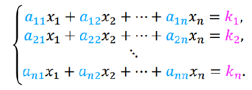

The fundamental idea is to add multiples of one equation to the others in order to eliminate a variable and to continue this process, until only one variable is left. Once this final variable is determined, its value is substituted back into the other equations in order to evaluate the remaining unknowns. Therefore, this method is characterized by step-by-step elimination of the variables.
For systems of simultaneous equations;
Where the coefficient matrix is augmented by writing the constants that appear on the right hand side of the equations as an additional column.
We can perform any of the following elementary row operations:
The goal of these operations is to transform the original augmented matrix into a matrix where any zero rows appear at the bottom of the matrix and the first nonzero entry in any row is to the right of the first nonzero entry in any higher row. This is said to be the echelon matrix.
An example of Gaussian Elimination;
9| 9 | 3 | 4 | x1 | 7 | |||
| 4 | 3 | 4 | x2 | = | 8 | ||
| 1 | 1 | 1 | x3 | 3 |
In augmented form, this becomes;
| 9 | 3 | 4 | 7 | x1 | ||
| 4 | 3 | 4 | 8 | x2 | ||
| 1 | 1 | 1 | 3 | x3 |
Switching the first and third rows (without switching the elementsin the right hand column vector) gives;
| 1 | 1 | 1 | 3 | x1 | ||
| 4 | 3 | 4 | 8 | x2 | ||
| 9 | 3 | 4 | 7 | x3 |
Subtracting the first row from the third row 9 times gives;
| 1 | 1 | 1 | 3 | x1 | ||
| 4 | 3 | 4 | 8 | x2 | ||
| 0 | -6 | -5 | -20 | x3 |
Subtracting the first row from the second 4 times gives;
| 1 | 1 | 1 | 3 | x1 | ||
| 0 | -1 | 0 | -4 | x2 | ||
| 0 | -6 | -5 | -20 | x3 |
Finally, subtracting the second row from the third 6 times gives;
| 1 | 1 | 1 | 3 | x1 | ||
| 0 | -1 | 0 | -4 | x2 | ||
| 0 | 0 | -5 | 4 | x3 |
Restoring the transformed matrix equation gives;
| 1 | 1 | 1 | x1 | 3 | |||
| 0 | -1 | 0 | x2 | = | -4 | ||
| 0 | 0 | -5 | x3 | 4 |
Taking this final transformed matrix we can solve for the x values. x3 can be solved easily to be -4/5. Substituting back into the original equation we can find x2 = 4 and x1 = -1/5
Created by UP938426 - Contact details
Project Supervisor - Dr John Geddes